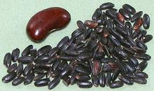
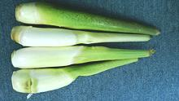
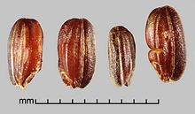

China is the world's largest grower of rice, over 2 million tons per year. Little information is available on Chinese rice here in North America, since none is exported here. Much rice is imported from Pakistan, which would be long grain indica rice. China exports less rice than the United States, though China is currently (2021) dumping aging government stocks of medium grain rice to the U.S. territory of Puerto Rico.
In the north, a medium grain rice similar to the Japanese is traditional, since that type grows better in cool climates. Most rice in China is grown in the Yangtze River Valley which is in the south, thus most of China uses long grain rice that cooks with grains fairly separate, just sticky enough to be eaten with chopsticks. Plain Rice is usually cooked with no salt. Photo by Raki_Man distributed under license Creative Commons Attribution-ShareAlike v3.0 Unported.
General Information on Rice, and Rice
of other regions.
China Black [Forbidden Rice] Said to once have been reserved exclusively for the emperor, this almost black medium grain rice turns a very dark purple when cooked. It is sold only "brown" to preserve the color and texture. Lotus Foods claims to have a copyright on the name "Forbidden Rice". The photo specimens, from China by way of Lotus Foods, were typically 0.215 inches long by 0.100 inch wide (5.5 x 2.5mm). A cup of this rice needs about 2-1/4 cups of water and about 60 minutes of cooking to make about 3 cups. The grains remain quite firm and very separate and the flavor is deep and pleasant. This is about the only rice anyone imports from China, but that is no longer necessary since a very fine derivative of this rice, Nero Venere, can now be purchased more economically right off the shelf in Italian markets. Wild Rice - Manchurian [Manchurian Ricegrass; Gu (China); Makomotake (Japan); Zizania latifolia] This rice is related to the North American Wild rice. It was once an important grain in Manchuria, but today is used only for its stems. Now rare in the wild, it is a cultivated crop. Success of cultivation depends on the stems being infected by a fungus, Ustilago esculenta. This fungus causes the stems to swell up to as much as 1.6 inches diameter for a length of about 10 inches. Used as a vegetable, it is appreciated for its tender texture and flavor
(similar to bamboo shoots), and is eaten both raw and cooked. It remains
crisp when stir fried. This grass is considered an invasive in New Zealand,
and it has been introduced to Hawaii. Import to mainland United States
is illegal, to protect North American Wild Rice from the fungus.
Wild Rice - Asian [Oryza rufipogon and hybrids]
Various varieties of this wild rice are a difficult to eradicate crop pest
of no commercial value. The seed heads of these varieties tend to shatter
(ripen unevenly and spill their seeds as they ripen). If seeds make into the
harvest, consumers may think they are spoiled, or not really rice, and they
take nutrients intended for the crop. They are listed as "noxious weeds"
in several US States, but these wild varieties are used by plant geneticists
developing new commercial rice varieties.
Photo by Julia Scher, Federal Noxious Weed Disseminules of the
U.S. (Federal Government) = public domain.
|
Within China, rice is not named or branded, but is known for the province from which it comes. Here is a list of major rice growing provinces in China, adapted from the Chinese site PANDA!YOO.